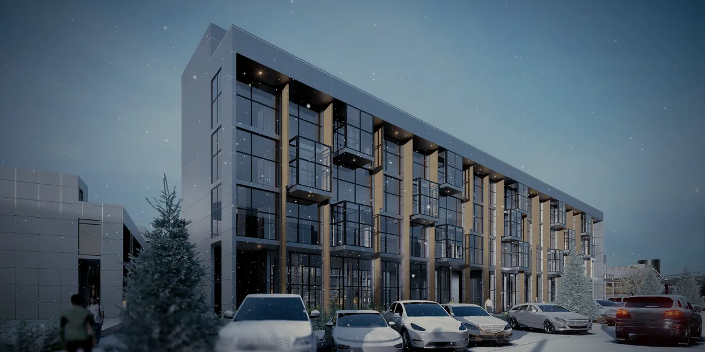
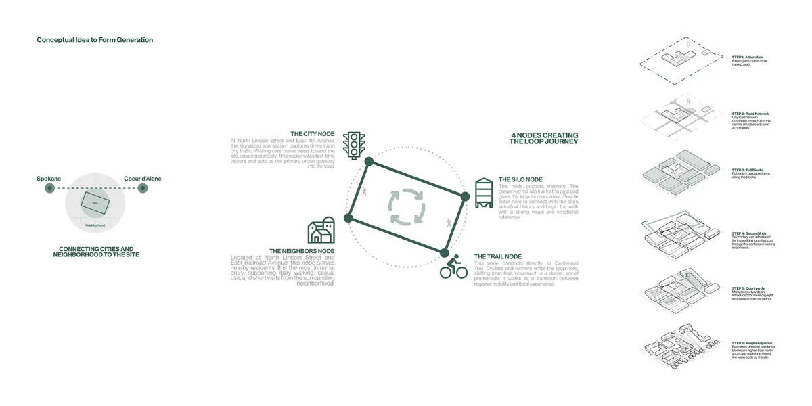
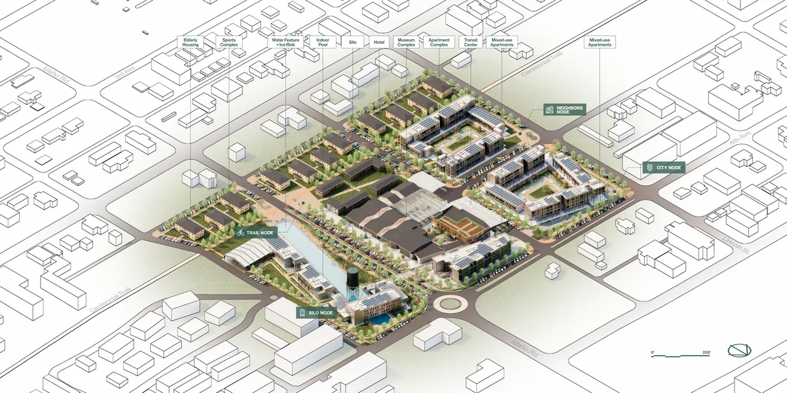
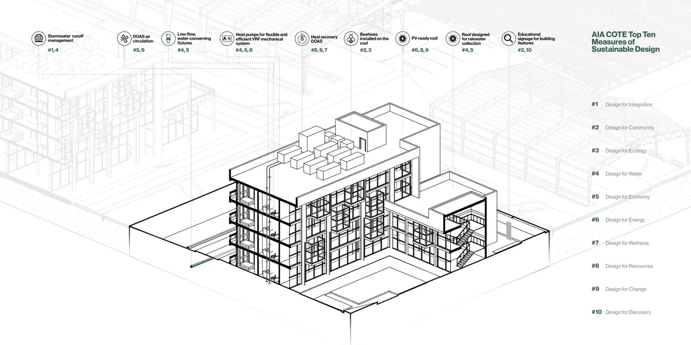
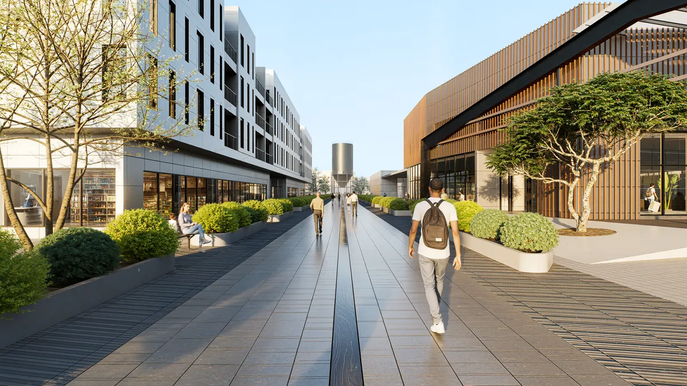
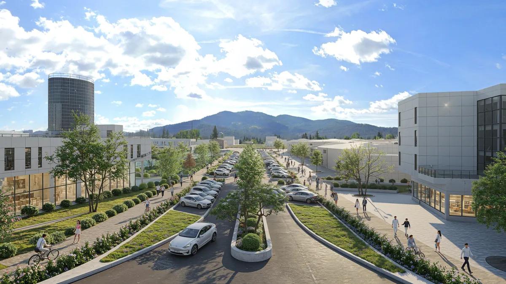
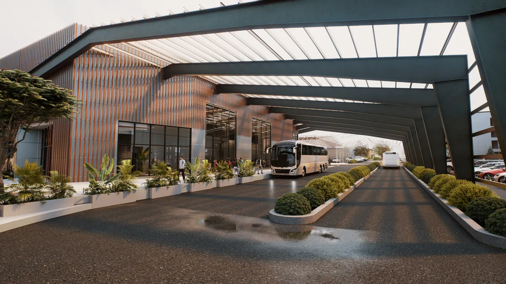
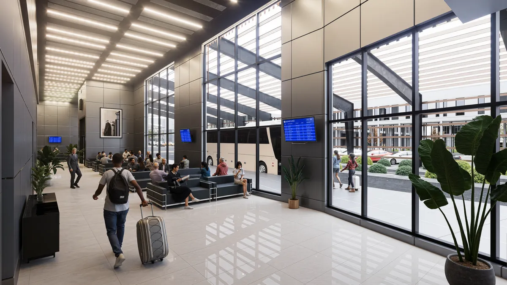

05 / 05
The Bussin Blocks
Connecting city and neighborhood through a loop walk
The Bussin Blocks redevelop a 19-acre brownfield, a former veneer mill, into Post Falls' first walkable downtown. Surrounding streets extend into the site and set a block size small enough for real porosity.
A walking loop ties four nodes together: the preserved mill silo, the Centennial Trail, the neighborhood edge and a city gateway. Housing, a transit center in the reused mill structure, a museum, a hotel and a seasonal ice rink line the route.
Concept
Four nodes create the loop journey. Six steps take the site from reused structures and a continued street grid to courtyard blocks with heights tuned to orientation.

Masterplan

Sustainability
The mixed-use apartments are tested against the AIA COTE Top Ten: PV-ready roofs, rainwater collection, heat recovery DOAS, VRF heat pumps and rooftop beehives.

Views



